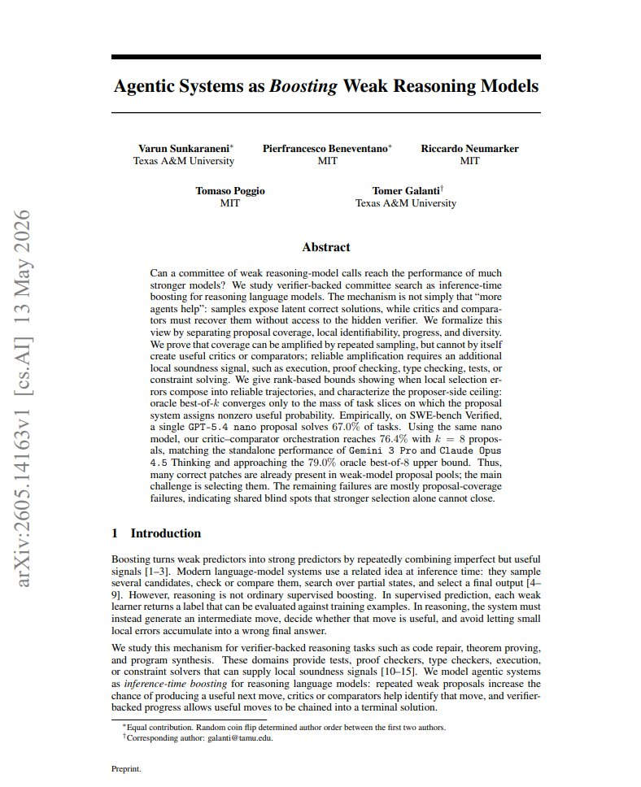
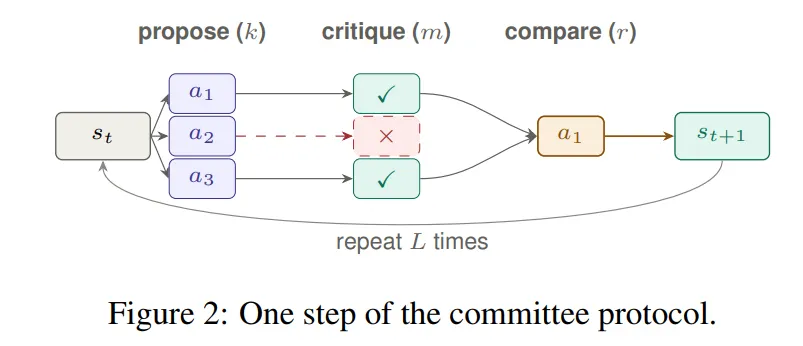
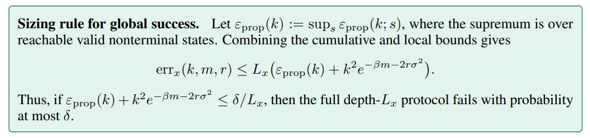
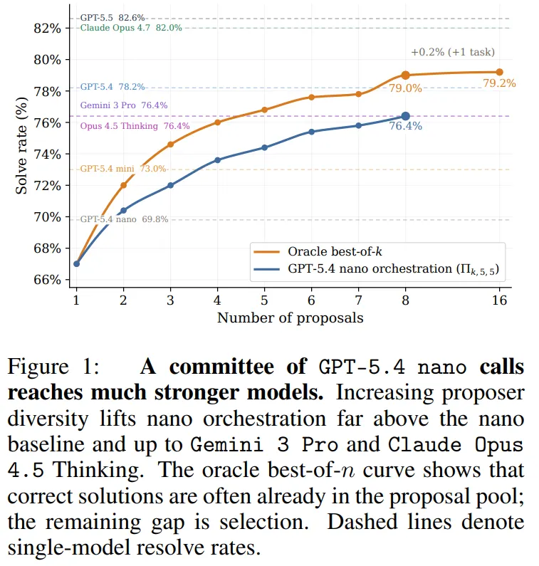
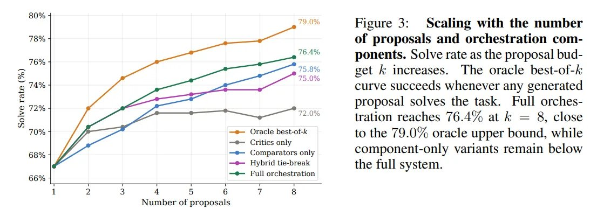

来源地图
本报告以 X 线程为入口，但主要结论来自 arXiv 论文正文和源码级公式核对。Substack 文章只作为作者对外传播版本的辅助上下文，不作为实验结论的唯一依据。
原帖短链解析到 Substack 和 arXiv；arXiv API 显示论文于 2026-05-13 提交，分类为 cs.AI，作者为 Varun Sunkaraneni、Pierfrancesco Beneventano、Riccardo Neumarker、Tomaso Poggio、Tomer Galanti。PDF 用 pdfinfo 确认为 32 页；源码中关键误差项是 \(k^2 e^{-\beta m - 2r\sigma^2}\)，其中 \(\sigma^2\) 来自 Hoeffding bound，而不是简单的一次项。

问题到底是什么
软件工程、证明、程序合成这类任务和普通问答不同。一次回答不是只输出一个 label，而是要在状态空间里连续做局部动作：读仓库、定位文件、改 patch、跑测试、修复副作用。每一步都可能局部看似合理但全局失败。
为什么“多采样”不是完整答案
论文反复强调一个分离：coverage 不自动产生 identifiability。你可以让模型均匀地产生很多动作，但如果系统观测不到隐藏世界参数，critic 和 comparator 仍然无法知道哪个动作错。对应到真实工程任务：候选 patch 里可能有一个通过隐藏测试，但如果 visible tests、执行日志、代码 review 信号无法区分它和过拟合 patch，selector 就会失败。
这也是这篇论文相对一般 best-of-N / self-consistency 讨论更有价值的地方。它不是只说“采样越多越强”，而是要求报告四个量：pass@1、oracle best-of-k、implemented system success 和 oracle-gap recovery。只有这四个量同时出现，才能诊断瓶颈到底在生成、选择还是共享盲点。
\(\Pi(k,m,r)\) 协议怎么工作
论文把一个 agentic workflow 抽象成 bounded-depth search。每个非终止状态 \(s\) 上，系统先生成候选动作，再用 critic 粗过滤，最后用 pairwise comparator 排名，选择 Copeland winner 并推进到下一状态。

Copeland-style voting 为什么重要
单轮 bracket 容易被偶然噪声污染：一个好 patch 如果早期遇到某个噪声判断就可能被淘汰。Copeland-style aggregation 更像完整 round-robin：每个候选和其他候选比较，按 pairwise win 计分。因此它保留了更多局部偏好证据。论文附录表 1 显示：Copeland round-robin 和 strict dominance 都到 75.8%，single-elimination bracket 只有 74.6%。
数学结构：错误来自哪里
这篇论文的核心公式不难，但很容易被误读。它不是在证明“任意多 Agent 都会指数变强”，而是在说明：在 coverage、critic edge、comparator edge、trajectory depth 都满足条件时，局部错误可以被分解并控制。
第一项是 proposal failure：\(k\) 个候选里没有任何 progressing-sound action。第二项是 identification failure：坏候选通过了 critic，并且在 comparator 投票中击败了好候选。
\(L_x\) 是轨迹深度上界。含义很工程化：局部选择错误会沿轨迹累积，所以越长的任务越需要更强的局部选择信号，或者更低的每步错误率。
\(R_k(s)\) 是有限采样残差，增加 proposal width 可以降低它；\(B_s\) 是 blind-spot floor，如果某类任务上 proposer 对正确动作分配零概率，那么再强的 selector 也无候选可选。
\(k^2\) 不是说多采样有害，而是 pairwise 错误机会随候选对数增加。增加 \(k\) 同时做两件相反的事：提升覆盖率，扩大选择难度。所以系统设计不能只调 proposal width，还要同步提高 critic/comparator 的边际质量和调用预算。

实验证据：SWE-bench Verified
实验用 SWE-bench Verified 的 500 个真实软件工程任务。每个任务先用 GPT-5.4 nano 生成 8 个独立候选 patch，所有 selector ablation 复用同一候选池，因此性能差异主要来自选择规则，而不是生成阶段变化。

指标怎么解释
- Pass@1 / single proposal：一次生成直接提交 patch，测的是 proposer 的单次终端成功率。
- Oracle best-of-k：事后用隐藏测试挑候选池中是否存在正确 patch，不能部署，只能诊断 proposal coverage。
- Implemented system success：真实 selector 只能看 issue、patch、visible tests、execution traces 等局部信号。
- Oracle-gap recovery：\((p_{\mathrm{system}}-p_1)/(p_{\mathrm{oracle}}-p_1)\)，衡量 selector 回收了多少候选池潜能。
| 系统或诊断量 | 论文报告值 | 含义 | 不能外推成什么 |
|---|---|---|---|
| GPT-5.4 nano one-shot | 67.0% | 摘要中的单 proposal solve rate。 | 不是 nano 的全部可恢复能力，只是单次选择路径。 |
| GPT-5.4 nano 图中 baseline | 69.8% | Figure 1 虚线标注的 standalone resolve rate。论文摘要与图中 baseline 存在 67.0% / 69.8% 两个上下文数值，报告保留差异。 | 不应混用不同实验语境下的数值做精确差值。 |
| \(\Pi(8,5,5)\) full orchestration | 76.4% | 8 个 proposal、5 个 critic votes、5 个 comparator votes per pair 的系统级结果。 | 不是权重训练提升；是推理期 harness 在特定 benchmark 上的系统性能。 |
| Oracle best-of-8 | 79.0% | 候选池里只要有一个 patch 过隐藏测试就算成功，代表候选池暴露的上界。 | 不是可部署算法，因为它读取隐藏测试结果。 |
| Gemini 3 Pro / Claude Opus 4.5 Thinking | 76.4% | 论文图中作为 standalone frontier comparison 的水平线。 | 不代表所有强模型、所有任务或相同成本下都被 nano 系统追平。 |
关键 ablation
| Ablation | Resolve rate | Oracle-gap recovery | 工程解释 |
|---|---|---|---|
| Critics only | 72.0% | 论文图 3 读数 | 二元过滤能丢掉明显坏 patch，但无法稳定选择多个 plausible patch 中最好的。 |
| Comparators only / no critic gate | 75.8% | 73.3% | pairwise ranking 是主力，但会被明显坏候选消耗比较预算和噪声空间。 |
| Drop 0-yes patches, \(\tau \ge 1\) | 76.4% | 78.3% | critic 最好作为宽松 gate，而不是严格 correctness certificate。 |
| Unanimous critic gate, \(\tau \ge 5\) | 76.0% | 75.0% | 过严过滤会误杀潜在正确 patch，削弱 proposal coverage。 |
| Single-elimination bracket | 74.6% | 63.3% | 便宜 tournament 牺牲证据覆盖，说明 pairwise evidence aggregation 的结构很重要。 |

76.4% 和 79.0% 的距离只有 2.6 个百分点，说明在这个候选池上 selector 已经回收了大部分可选潜能。剩余更大的瓶颈不是“更会选”，而是“候选池根本没有正确 patch”的 oracle-unreachable 任务。
边界与失败模式
这篇论文的边界非常重要，因为它容易被传播成“弱模型只要套 harness 就能打强模型”。更准确的说法是：当任务有局部可验证信号，并且正确候选能以非零概率进入候选池时，harness 可以高效回收一部分 latent capability。
如果团队只看到“comparator 很强”，可能会把更多预算投入 LLM-as-judge，而不是改进 candidate generation。论文的 failure decomposition 恰好提示相反方向：当 oracle-reachable-but-missed 已经很小，继续强化 selector 的收益会递减，真正要攻的是 oracle-unreachable 的 coverage failure。
对 Agent 工程的启发
这篇论文给的是一个诊断框架，而不是一个固定 recipe。落到工程上，最有价值的是把 agent 性能拆成候选生成、局部验证、比较聚合、轨迹深度和成本曲线，而不是只看最终榜单。
| 工程问题 | 应该记录的量 | 对应动作 |
|---|---|---|
| 模型是不是不会做，还是做了但不会选？ | pass@1、oracle best-of-k、implemented success。 | 先用离线隐藏评测估候选池上界，再决定该投 proposal 还是 selector。 |
| critic 是过滤器还是裁判？ | 不同 threshold 下的 false reject、solve rate、oracle-gap recovery。 | 优先把 critic 设计成 permissive gate，避免过早删除可能正确的候选。 |
| comparator 是否只是随机 judge？ | position-swap agreement、tie rate、pairwise consistency、不同 judge family 的 disagreement。 | 用双顺序比较、保守计胜、Copeland aggregation 和多 judge family 做稳健化。 |
| 继续加 k 是否值得？ | oracle best-of-k 曲线斜率、selector gap、latency/token cost。 | 如果 oracle 曲线还涨，投 proposal diversity；如果 oracle 高但 system 低，投 selector。 |
| 失败主要来自哪里？ | solved、oracle reachable missed、oracle unreachable 三类 breakdown。 | reachable missed 对应选择改进；unreachable 对应生成、工具、检索、任务拆分改进。 |
一个可落地的最小实验模板
For each benchmark task:
1. Generate k candidate solutions with fixed proposer settings.
2. Run hidden or gold verifier offline to compute oracle best-of-k.
3. Run deployable selector using only allowed local evidence.
4. Split failures:
solved_by_selector
oracle_reachable_but_missed
oracle_unreachable
5. Plot pass@1, oracle best-of-k, system success, cost and latency.
Decision:
if oracle_reachable_but_missed is large:
improve critics, comparators, aggregation, evidence extraction
if oracle_unreachable is large:
improve proposer diversity, retrieval, tools, task decomposition
if both are small:
benchmark may be saturated or metric too narrow我的判断
这篇论文的长远价值，不在于某个 76.4% 的 leaderboard 数字，而在于把 agentic system 的能力来源从黑箱“编排玄学”变成可测的四个轴。
过去很多 agent 讨论把“模型能力”和“系统能力”混在一起。这个框架强迫我们分开看：模型分布里是否有正确候选，系统是否有足够信号选中它，局部选择能否沿轨迹组合，以及多样性是否真的覆盖不同失败模式。这个拆分比单一榜单更接近真实工程决策。
我认为真正新的是诊断语言
“弱模型 latent capability”这个说法并不新，best-of-N、self-consistency、verifier selection 都在暗示它。但这篇论文把它变成了一套可报告的量：\(p_1\)、\(p_{\mathrm{oracle}}(k)\)、\(p_{\mathrm{system}}\)、Rec、blind-spot floor。它让我们能问：系统差，是因为没生成、没识别、没组合，还是没多样性？
我认为最该警惕的是传播表述
“nano matches frontier giants”是传播上有冲击力的句子，但工程上必须补三层限定：同一 benchmark、特定 k 和 selector budget、以及未计入相同成本和延迟的完整对比。更稳的表述是：在 SWE-bench Verified 上，nano proposal pool 暴露出接近 frontier-level 的候选池潜能，而 critic-comparator harness 回收了其中大部分。
和近期 Agent 研究的连接
这篇工作可以和 SWE-ZERO-12M、NanoGPT-Bench、ECHO、VPO 放在同一条线上看：大家都在从“单模型一次输出”转向“生成分布 + 评估/验证 + 搜索/训练闭环”。区别在于这篇更偏理论和诊断，VPO 偏训练分布多样性，ECHO 偏利用环境 observation 做稠密监督，NanoGPT-Bench 偏评估 agent 是否能做研究。共同趋势是：Agent 时代的能力不再只是参数规模，还是候选空间、反馈信号和预算分配问题。
本地复现材料
下面是本次阅读保留的主要本地材料和抓取命令，便于后续复查数字、公式和来源边界。
# X 线程抓取
opencli twitter thread "https://x.com/che_shr_cat/status/2058713325106614301" \
--limit 100 -f json --trace retain-on-failure \
> "results/che-shr-cat-x-2058713325106614301/thread-2058713325106614301.json"
# 作者 profile
opencli twitter profile "che_shr_cat" -f json --trace retain-on-failure \
> "results/che-shr-cat-x-2058713325106614301/profile-che-shr-cat.json"
# Substack 解读抓取
opencli web read --url "https://arxiviq.substack.com/p/agentic-systems-as-boosting-weak" \
--output "results/che-shr-cat-x-2058713325106614301/substack" \
--download-images true --wait 5 -f json --trace retain-on-failure
# 论文 PDF、API 元数据和源码
curl -L --fail "https://arxiv.org/pdf/2605.14163" \
-o "results/che-shr-cat-x-2058713325106614301/2605.14163-agentic-systems-boosting.pdf"
pdftotext -layout "results/che-shr-cat-x-2058713325106614301/2605.14163-agentic-systems-boosting.pdf" \
"results/che-shr-cat-x-2058713325106614301/2605.14163-agentic-systems-boosting.txt"
curl -L --fail "https://export.arxiv.org/api/query?id_list=2605.14163" \
-o "results/che-shr-cat-x-2058713325106614301/arxiv-2605.14163.xml"
curl -L --fail "https://arxiv.org/e-print/2605.14163" \
-o "results/che-shr-cat-x-2058713325106614301/2605.14163-source.tar"